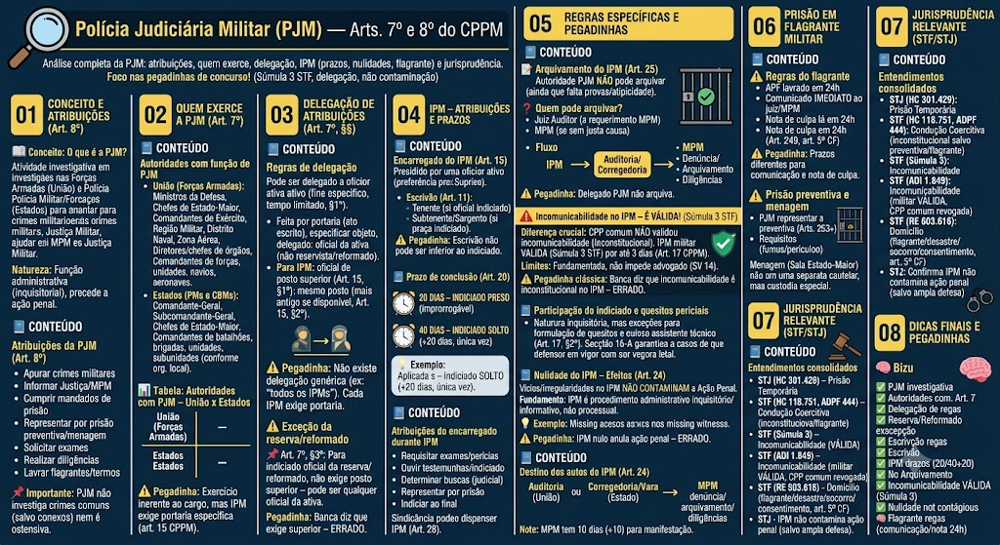

O que é a Polícia Judiciária Militar?
O que é a Polícia Judiciária Militar?
A Polícia Judiciária Militar (PJM) é a atividade investigativa exercida no âmbito das Forças Armadas (União) e das Polícias Militares e Corpos de Bombeiros Militares (Estados), destinada a apurar os crimes militares e sua autoria, subsidiando a atuação do Ministério Público Militar e da Justiça Militar.
Natureza: é uma função administrativa (inquisitorial), não judicial, e precede a ação penal.
Atribuições da PJM (Art. 8º)
Atribuições da PJM (Art. 8º)
O Art. 8º do CPPM elenca as atribuições da PJM, que são, em síntese:
- Apurar os crimes militares e sua autoria;
- Prestar informações à Justiça Militar e ao Ministério Público Militar (MPM);
- Cumprir mandados de prisão expedidos por autoridade judiciária militar;
- Representar pela prisão preventiva ou pela menagem (prisão especial), quando cabível;
- Solicitar informações e exames à polícia civil, a órgãos públicos ou a peritos, quando necessário;
- Realizar diligências requisitadas pelo juiz ou pelo MPM;
- Lavrar autos de prisão em flagrante e termo circunstanciado (quando couber).
📌 Importante: a PJM não tem a atribuição de investigar crimes comuns (salvo quando conexos a crimes militares), nem atua como polícia ostensiva – sua função é estritamente investigativa.
Autoridades com função de PJM
Autoridades com função de PJM
O Art. 7º do CPPM estabelece que a PJM é exercida, em caráter geral, pelas seguintes autoridades:
Na União (Forças Armadas):
- Ministros das Forças Armadas (hoje Ministério da Defesa e Comandantes das Forças);
- Chefes de Estado-Maior;
- Comandantes de Exército, Região Militar, Distrito Naval, Zona Aérea;
- Diretores e chefes de órgãos, estabelecimentos e repartições militares;
- Comandantes de forças, unidades, navios e aeronaves.
Nos Estados (PMs e CBMs):
- Comandante-Geral;
- Subcomandante-Geral;
- Chefes de Estado-Maior;
- Comandantes de batalhões, brigadas, unidades e subunidades (conforme organização local).
⚠️ Pegadinha: O exercício geral da PJM é inerente ao cargo dessas autoridades, ou seja, não depende de portaria específica para atuar como PJM. Porém, a instauração de cada IPM exige portaria de delegação específica para o oficial encarregado (art. 15, CPPM).
Regras de delegação
Regras de delegação
As atribuições de PJM podem ser delegadas a oficiais da ativa, para fim específico e por tempo limitado (Art. 7º, §1º).
Principais regras:
- A delegação deve ser feita por portaria (ato escrito);
- Deve especificar o objeto (ex.: instaurar IPM para apurar determinado crime);
- O delegado deve ser oficial da ativa (não pode ser reservista ou reformado);
- Para instaurar IPM, a delegação deve recair em oficial de posto superior ao do indiciado (Art. 15, §1º);
- Se não houver oficial de posto superior disponível, pode ser do mesmo posto, desde que seja o mais antigo (Art. 15, §2º);
- Se o indiciado for oficial da reserva ou reformado, a antiguidade de posto não prevalece – aplica-se a regra geral do Art. 7º, §3º (cai muito em prova!).
⚠️ Pegadinha: Não existe delegação genérica para \"todos os IPMs do ano\". Cada IPM exige portaria específica, com designação do encarregado.
Exceção da reserva/reformado
Exceção da reserva/reformado
📌 Art. 7º, §3º: Se o indiciado for oficial da reserva ou reformado, a exigência de oficial de posto superior não se aplica – pode ser designado qualquer oficial da ativa, independentemente do posto, desde que haja disponibilidade e a designação seja fundamentada.
Pegadinha: A banca pode afirmar que, para oficial da reserva, também se exige oficial de posto superior – ERRADO.
Encarregado do IPM (Art. 15)
Encarregado do IPM (Art. 15)
O IPM é presidido por um oficial da ativa, preferencialmente do posto de Capitão ou Oficial Superior (Art. 15, caput).
Escrivão (Art. 11):
- Se o indiciado for oficial, o escrivão deve ser um Tenente;
- Se o indiciado for praça, o escrivão deve ser um Subtenente ou Sargento.
⚠️ Pegadinha: O escrivão não pode ser de posto/graduação inferior ao indiciado – a regra é rígida e cobrada em provas.
Prazo de conclusão do IPM (Art. 20)
Prazo de conclusão do IPM (Art. 20)
Art. 20: O IPM deve ser concluído no prazo de:
- 20 (vinte) dias – se o indiciado estiver preso (improrrogável).
- 40 (quarenta) dias – se o indiciado estiver solto (prorrogável por mais 20 dias, mediante justificativa).
Prorrogação: pode ser concedida pelo juiz ou pelo MPM, uma única vez, por igual período.
💡 Exemplo: Se o indiciado está preso temporariamente, o IPM deve ser concluído em 20 dias; se estiver solto, o prazo é de 40 dias, podendo ser estendido para 60.
Atribuições do encarregado durante o IPM
Atribuições do encarregado durante o IPM
O encarregado do IPM tem amplos poderes investigativos:
- Requisitar diretamente a órgãos civis e militares exames, perícias e informações necessárias (Art. 17, CPPM);
- Ouvir testemunhas e o indiciado;
- Determinar buscas e apreensões (com autorização judicial, quando necessário);
- Representar pela prisão preventiva ou temporária (quando cabível);
- Indiciar o autor do crime, ao final, com base nos elementos colhidos.
📌 Sindicância: Se já houver elementos suficientes de autoria e materialidade, a sindicância pode dispensar a instauração de IPM para subsidiar a denúncia (Art. 28, CPPM).
Arquivamento do IPM (Art. 25)
Arquivamento do IPM (Art. 25)
A autoridade policial militar NÃO pode mandar arquivar os autos do IPM, ainda que entenda pela atipicidade da conduta ou falta de provas (Art. 25).
Quem pode arquivar?
- O Juiz Auditor, a requerimento do Ministério Público Militar.
- O Ministério Público Militar, se entender que não há justa causa para a ação penal.
Fluxo: Concluído o IPM, os autos são remetidos à Auditoria ou à Corregedoria, que os encaminha ao MPM para manifestação. O MPM pode oferecer denúncia, pedir arquivamento ou requisitar diligências complementares.
⚠️ Pegadinha: O delegado de polícia militar (encarregado do IPM) não pode arquivar – essa é uma atribuição exclusiva do juiz ou do MP.
⚠️ Incomunicabilidade no IPM – É VÁLIDA! (Súmula 3 STF)
⚠️ Incomunicabilidade no IPM – É VÁLIDA! (Súmula 3 STF)
O Art. 17 do CPPM permite que o encarregado do IPM mantenha o preso incomunicável por até 3 (três) dias, mediante despacho fundamentado.
Entendimento do STF (Súmula 3): 'A incomunicabilidade do indiciado, prevista no Art. 17 do CPPM, é constitucional e válida, desde que observados os limites legais.'
Diferença crucial (CAI MUITO!):
- No processo penal comum (CPP): a incomunicabilidade NÃO foi recepcionada pela CF/88 – é inconstitucional.
- No processo penal militar (CPPM): a incomunicabilidade É VÁLIDA (Súmula 3 STF), por até 3 dias, no âmbito do IPM.
Limites:
- Deve ser fundamentada;
- Não impede o contato com o advogado (SV 14 – acesso aos autos e comunicação com defensor);
- Restringe apenas o contato com outras pessoas (familiares, terceiros).
⚠️ Pegadinha clássica: A banca afirma que a incomunicabilidade no IPM é inconstitucional – ERRADO. É válida no processo penal militar (Súmula 3 STF).
Participação do indiciado e quesitos periciais
Participação do indiciado e quesitos periciais
O IPM é inquisitório, ou seja, o indiciado não tem direito a amplo contraditório durante a investigação (não há audiência de instrução). No entanto, quando se tratar de exame pericial, o indiciado pode formular quesitos e indicar assistente técnico (Art. 17, §2º, CPPM).
Exceção (Art. 16-A): Em investigações envolvendo uso de força letal no exercício profissional, o investigado deve ser citado para constituir defensor em até 48 horas (garantia extra).
Nulidade do IPM – Efeitos (Art. 24)
Nulidade do IPM – Efeitos (Art. 24)
Eventuais vícios, irregularidades ou nulidades ocorridas no curso do IPM NÃO CONTAMINAM a Ação Penal militar subsequente (Art. 24, caput).
Fundamento: O IPM é um procedimento administrativo inquisitório e informativo, não sendo uma fase processual. A denúncia pode ser baseada em outros elementos, e o juiz avaliará as provas produzidas em juízo, com contraditório.
💡 Exemplo: Se o encarregado do IPM deixou de ouvir uma testemunha, isso não invalida a denúncia – a testemunha poderá ser ouvida em juízo.
⚠️ Pegadinha: A banca afirma que o IPM nulo anula a ação penal – ERRADO. A ação penal é autônoma.
Destino dos autos do IPM (Art. 24)
Destino dos autos do IPM (Art. 24)
Concluído o IPM e lavrado o relatório, os autos são remetidos à autoridade competente:
- Na Justiça Militar da União: à Auditoria da Justiça Militar;
- Na Justiça Militar Estadual: à Corregedoria ou à Vara da Justiça Militar (conforme organização local).
O juiz abre vista ao Ministério Público Militar (MPM) para:
- Oferecer denúncia (se houver justa causa);
- Promover o arquivamento (se não houver elementos);
- Requisitar diligências complementares (se necessário).
📌 Prazo para manifestação do MPM: 10 dias (art. 26, CPPM), prorrogável por igual período.
Regras do flagrante no CPPM
Regras do flagrante no CPPM
O CPPM possui regras próprias para a prisão em flagrante delito:
- Qualquer pessoa do povo pode prender quem estiver em flagrante de crime militar (Art. 244);
- Os militares têm o dever de prender quem estiver em flagrante, independentemente de ordem (Art. 245);
- O auto de prisão em flagrante (APF) deve ser lavrado pela autoridade militar (encarregado da PJM ou oficial designado) em até 24 horas;
- O APF deve ser comunicado imediatamente ao juiz competente e ao Ministério Público Militar;
- O preso deve receber cópia da nota de culpa em até 24 horas (Art. 249, CPPM, com aplicação do art. 5º, LXIV, CF);
- A prisão em flagrante militar não depende de mandado judicial e pode ser convertida em preventiva ou temporária pelo juiz, se presentes os requisitos.
⚠️ Pegadinha: O prazo para comunicação do APF ao juiz é de 24 horas, mas a nota de culpa também deve ser entregue em 24 horas – são dois prazos distintos.
Prisão preventiva e menagem
Prisão preventiva e menagem
A PJM pode representar pela prisão preventiva do militar indiciado (Arts. 253 e seguintes do CPPM), sempre com fundamentação e demonstração dos requisitos (fumus comissi delicti e periculum libertatis).
Menagem: é a prisão especial do militar, que deve ser recolhido em sala de Estado-Maior ou local especial (Art. 295, V, CPP, aplicado por analogia). A menagem não é uma medida cautelar autônoma, mas uma condição especial do recolhimento.
Entendimentos consolidados
Entendimentos consolidados
Os tribunais superiores já pacificaram importantes teses sobre a PJM e o IPM:
Resumo para provas
Resumo para provas
📌 PJM = função investigativa, não ostensiva.
📌 Art. 7º: autoridades que exercem (União e Estados).
📌 Delegação: oficial da ativa, posto superior ao indiciado, portaria específica para cada IPM.
📌 Se indiciado for reserva/reformado: pode ser qualquer oficial, independente de posto.
📌 Escrivão: Tenente (se oficial), Subtenente/Sargento (se praça).
📌 Prazo IPM: 20 dias (preso) / 40 dias (solto, prorrogável +20).
📌 Arquivamento: só juiz ou MP – PM não pode arquivar.
📌 Incomunicabilidade no IPM: VÁLIDA por 3 dias (Súmula 3 STF) – DIFERENTE do CPP comum!
📌 Nulidade do IPM: não contamina a ação penal.
📌 Flagrante: qualquer pessoa pode prender; militar DEVE prender. Comunicação ao juiz e nota de culpa em 24h.
Mapa-mental – Polícia Judiciária Militar
Material de estudo: Polícia Judiciária Militar (PJM) — Arts. 7º e 8º do CPPM
Material complementar · Ver fonte no GitHub
Quem exerce a PJM (Art. 7º)
Autoridades com PJM – União x Estados
| União (Forças Armadas) | Estados (PMs e CBMs) |
|---|---|
| Ministros das Forças Armadas / Ministério da Defesa | Comandante-Geral |
| Comandantes de Forças (Exército, Marinha, Aeronáutica) | Subcomandante-Geral |
| Chefes de Estado-Maior | Chefes de Estado-Maior |
| Comandantes de Exército, Região Militar, Distrito Naval, Zona Aérea | Comandantes de batalhões/brigadas |
| Diretores e chefes de órgãos militares | Comandantes de unidades/subunidades |
| Comandantes de forças, unidades, navios e aeronaves | Comandantes de subunidades (quando previsto em regulamento) |
Jurisprudência Relevante (STF/STJ)
Entendimentos consolidados
Os tribunais superiores já pacificaram importantes teses sobre a PJM e o IPM:
- STJ (HC 301.429): A prisão temporária é aplicável no processo penal militar, desde que observados os requisitos da Lei 7.960/89, e pode ser representada pela autoridade policial militar.
- STF (HC 118.751): A condução coercitiva para interrogatório é inconstitucional, inclusive no âmbito militar (ADPF 444), salvo se houver ordem judicial para condução com fundamento em prisão preventiva ou flagrante.
- STF (Súmula 3): 'A incomunicabilidade do indiciado, prevista no Art. 17 do CPPM, é constitucional e válida.'
- STF (ADI 1.849): A incomunicabilidade do preso militar (Art. 17 do CPPM) foi revogada? – NÃO! A Súmula 3 do STF a mantém válida. O que foi revogado foi a incomunicabilidade do preso no processo comum (CPP), não no militar.
- STF (RE 603.616): A entrada em domicílio sem mandado, no âmbito militar, só é lícita em flagrante delito, desastre ou socorro, ou com consentimento do morador – a mesma regra do art. 5º, XI, CF.
- STJ: O IPM é procedimento administrativo informativo; vícios formais não invalidam a ação penal, salvo quando afetarem diretamente a ampla defesa e o contraditório (exceção do art. 24).
Dicas Finais e Pegadinhas
Mapa-mental – Polícia Judiciária Militar
